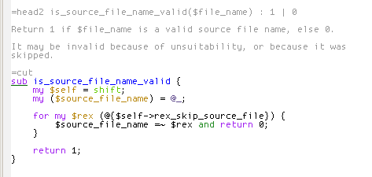
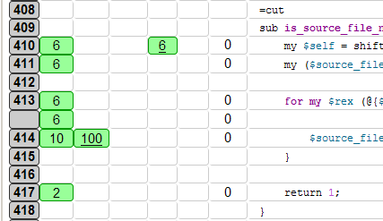
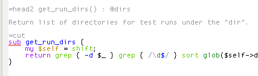
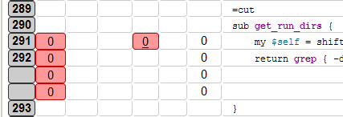

Subtle green underlined "sub" keyword indicating the sub was covered.

Sub coverage does not guarantee 100% line coverage like in this (bad) example.

Red underline + complex method == likely breakage.

And (obviously) no line coverage.